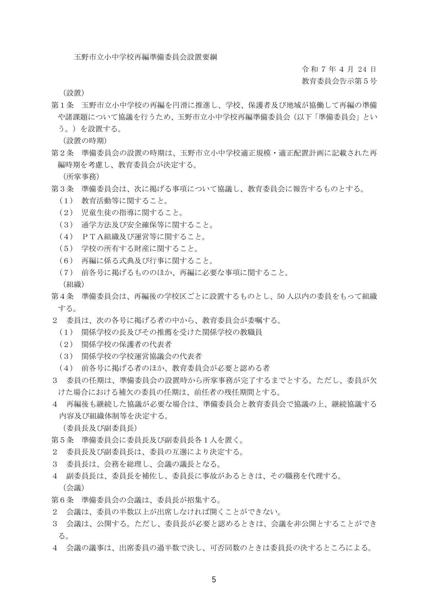
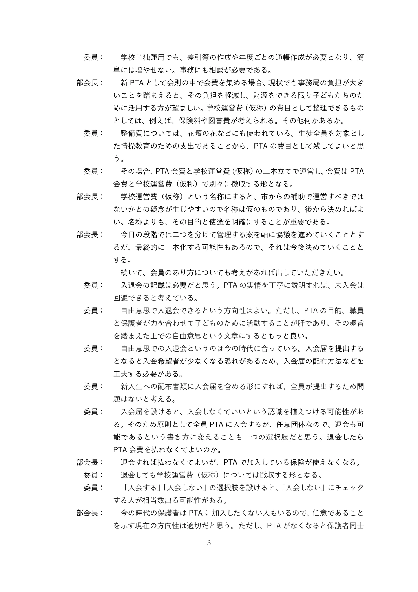
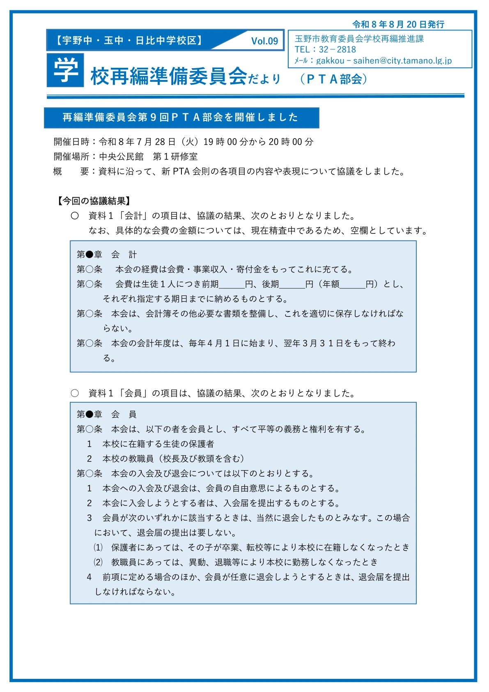
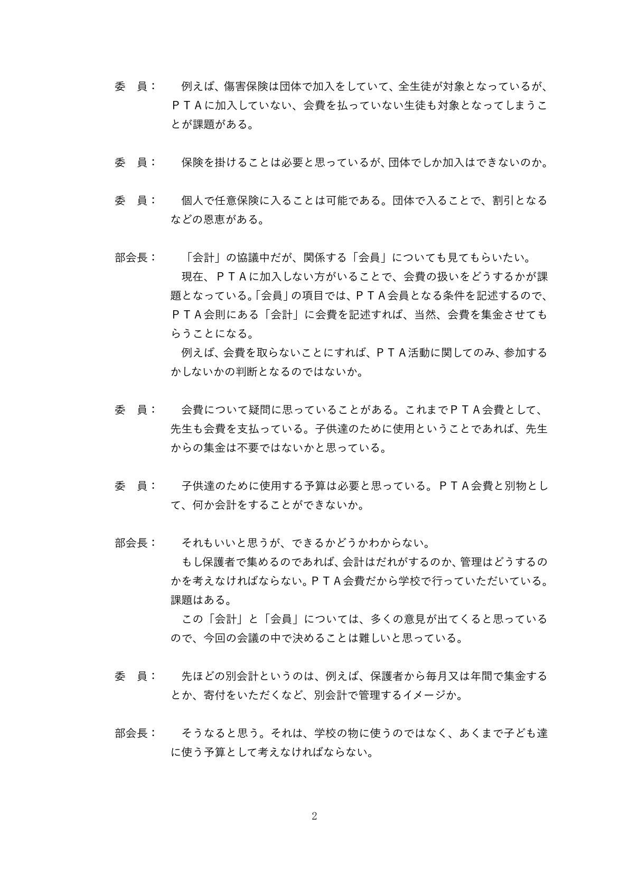
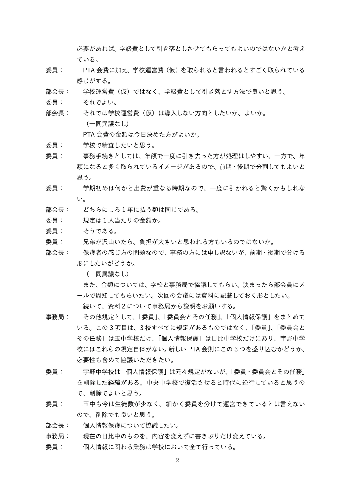
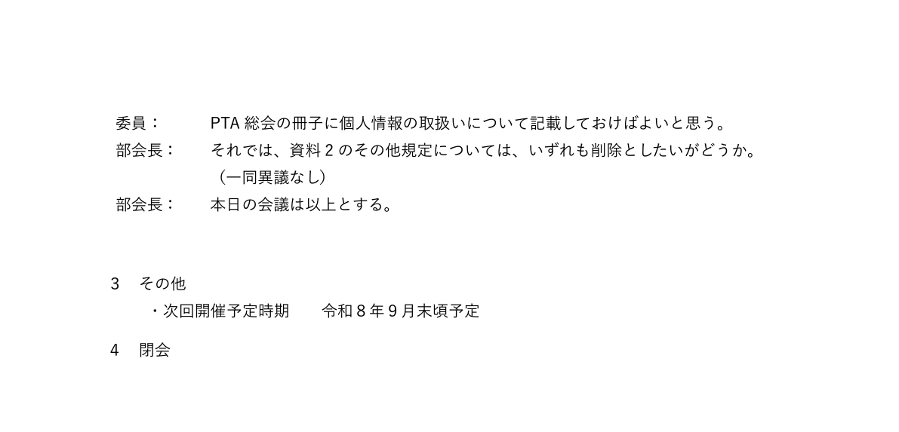
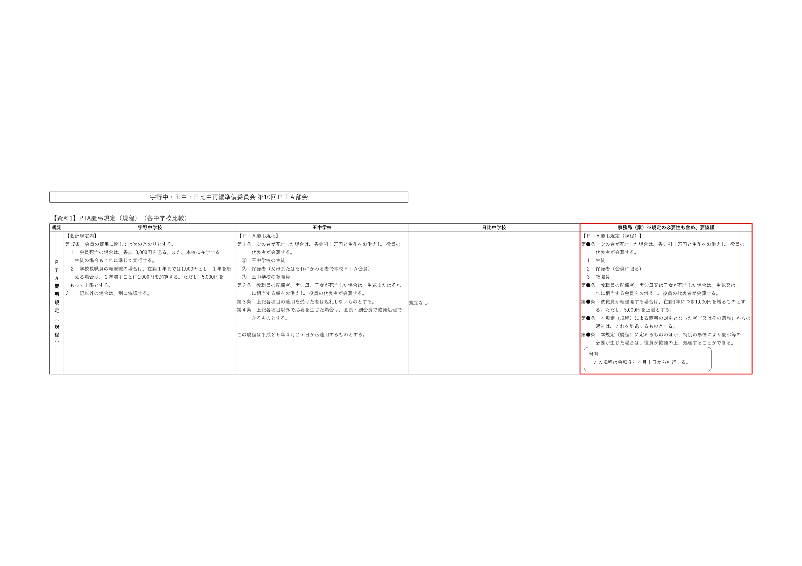

2027年4月に開校する玉野市立玉野中央中学校のPTAは、誰の意思で設立され、誰が会員となり、誰がその事務を行うのか。学校を統合する行政上の手続と、任意団体を設立する民間の手続は同一ではない。開校準備の会議で会則を整える場合も、将来の会員の加入意思と、学校が担える事務の範囲は、それぞれ確認しなければならない。
本件で注目すべきなのは、単に会則に「任意」と書くかどうかではない。入会手続は見直される一方で、会費額の精査や個人情報の業務について、学校の関与を前提とする発言と協議結果が残っている。加入の任意化だけで公私分離まで実現したと評価することはできない、という問題が具体的に見える。
1．行政の再編準備と、PTAの設立意思を分ける
玉野市の再編準備委員会は、教育委員会が委員を委嘱し、学校再編について協議・報告する組織である。設置要綱第3条はPTA組織・運営を協議事項に含め、第7条と別表はPTA部会に組織統合、役員選出、規約見直し、財産引継ぎ等の検討を割り当てている。学校再編推進課が庶務を担う。ここから、PTAの設計が行政の開校準備に組み込まれていることは確認できる。


ただし、同要綱が定めるのは協議と報告の権限である。これを、そのまま将来の保護者の入会承諾や、新PTAの総会決議と扱うことはできない。既存PTAの役員が準備に参加しているとしても、将来の非会員まで会費負担に同意したことにはならない。
社会教育法10条・12条は、社会教育関係団体の位置付けと、不当な統制的支配・事業への干渉の禁止を定める。行政が再編の連絡調整を行うこと自体を直ちに違法と評価するのではなく、準備会議が作った案を、誰がどの権限で任意団体の会則として採用するのかを問う必要がある。新PTAの設立主体、会則採用の手続、既存3PTAからの財産移転の承認は、本稿の確認資料だけでは確定できない。
法的基準：社会教育法10条・12条。開校時期・校名：玉野市「新たな中学校名」の校名について（2025年12月22日更新）。
2．全員加入を求める発言と、入会届を求める協議結果
5月19日の第8回会議では、入会届を設けると加入者が減るとの懸念や、原則全員加入・退会可能という方式を検討する発言が記録されている。これは、任意加入を制度として実施することへの抵抗を示す材料である。しかし、この発言を新PTAの決定事項と読み替えてはならない。


その後の7月28日の協議結果は、8月20日発行の部会だよりに条文として掲載されている。そこでは入退会を本人の自由意思に委ね、入会希望者には入会届を求める。卒業・転校・教職員の異動等は当然退会とし、それ以外の退会には届を求める内容となっている。5月の全員加入を求める発言よりも、後の協議結果として公表された入会届方式を重視すべきである。


一方で、保護者と教職員を会員として列挙する条文もある。これは、入会届の条文と一体で読み、加入できる人の範囲と、実際に加入を承諾した人を区別して運用する必要がある。「教職員に含まれる」「保護者である」という属性だけでは、個人の加入意思を確認したことにはならない。
民法522条の申込み・承諾という観点からも、提出を一律に求める入学書類の一つに入会届を紛れ込ませれば足りるわけではない。活動、会費、退会方法を説明し、未提出者を会員にしない運用まで整って初めて、この条文の方向性が実務に現れる。実際の入会届様式、提出先、未提出時の取扱いは未確認である。
法的基準：民法522条。書面自体が常に法定の成立要件なのではなく、本件では公表された条文案が入会届を求めている。
3．会員は任意でも、会費と会計は学校に依存するのか
3月18日の第7回会議録には、保護者側で集めるなら管理者を考える必要があり、PTA会費だから学校に処理してもらっている、という趣旨の発言がある。これは発言者の説明であり、新校での学校徴収を法的に承認する資料ではない。しかし、学校が団体会計を担う運用が議論の背景にあることは読み取れる。


7月28日の会議では、会費を前期・後期に分ける方向で異議なしとされ、金額については学校と事務局で協議し、部会員にメールで知らせることとされた。入会を自主的にする一方、負担額の精査を学校・行政事務局へ委ねる構造が見える。8月20日のだよりでも金額は空欄であり、9月29日の公開資料には確定額が掲載されていない。


学校の支出見込みを聞くことと、学校がPTA会費を決定・収納・管理することは別である。会費債権の主体、請求対象となる会員の確定、引落し口座、未納対応、返金、送金、帳簿管理を分解し、各作業の担当者と根拠を確認する必要がある。公開会議録からは、こうした一連の事務を新校で誰が担うのかまでは分からない。
地方公務員法35条は教職員の勤務時間等を地方公共団体の職務に用いることを求める。PTAとの学校側の連絡調整と、私人団体の会員・債権・会計の管理は区別して検討すべきであり、PTAの会則を作ったことだけで後者が学校の職務になるわけではない。本件では具体的な学校側の根拠規定や勤務上の扱いが未確認であるため、学校徴収が適法又は違法と個別に断定する段階にはない。
法的基準：地方公務員法35条。学校による徴収の根拠と加入契約の成立は、それぞれ独立して確認する。
4．「学校運営費」を見送っても、学級費への付け替えは残る
5月の会議では、PTA会費とは別に全家庭から学校運営費（仮称）を集め、保険等の費用を賄う案が議論された。7月の会議ではこの学校運営費を導入しない方向で異議なしとされ、8月の部会だよりも別の諸費徴収制度を導入しないと伝えている。ここまでが確認できる協議結果である。
ただし、7月の会議録には、必要があれば学級費として引き落とす方法への賛同も記録されている。新たな徴収制度を作らないという公表と、既存の学級費を利用するという発言は、同じ意味ではない。別会計案を見送ったことから、PTA関連支出を非会員に負担させる可能性まで解消されたとは言えない。
もちろん、学校教育に必要な教材等の学級費と、PTAの団体運営費では性質が異なる。論点は「学級費」という名称ではなく、支出内容、負担根拠、契約主体、受益者、会員でない家庭の扱いである。どの費目を学級費に移したのか、実際に移したのかは未確認であり、現時点で協力金徴収が決定したと書くこともできない。
特に保険について、5月の会議録では教育活動中の物損等が説明され、けがの補償とは区別されている。加入対象、保険契約者、補償範囲は保険証券・約款で確認すべきであり、会費未納者や非会員の子どもが補償から外れることを会議発言だけで確定してはならない。
5．個人情報保護の規定を削除した理由が、学校への事務依存を示す
7月の会議では、委員関係の規定と個人情報保護規定を新会則に設けるかが検討された。その際、個人情報の業務は学校で行っているとの発言に続き、総会冊子に取扱いを記載すればよいとの意見が出て、これらの規定はいずれも削除する方向で異議なしとなった。8月の部会だよりにも規定を設けない旨が掲載されている。


会則に個人情報保護条項がないこと自体から、直ちに違法とは言えない。取扱規程を別に設けることも可能である。問題は、学校に任せればPTA自身の責任がなくなるという前提で制度を組み立てていないか、である。冊子に説明を載せることは周知の方法であり、学校が情報を保有・利用できる法的根拠を作る手続ではない。
個人情報保護委員会の2026年3月資料は、公立学校側の所掌事務と利用目的の確認、PTA側に適用される民間の規律を分けて説明している。学校側には個人情報保護法61条・69条等が、PTA側には利用目的、安全管理、第三者提供等の規律が問題となる。双方の責任は、どちらが作業するかだけでは消えない。
例えば、学校が入会届の未提出者を割り出すために全校の保護者名簿を照合し、加入勧誘の連絡を行うなら、その情報利用を何の学校業務として位置付けるのかが先に問われる。口座情報をPTA会費の引落しに反復利用する場合も同様である。本人の同意だけであらゆる恒常的処理を説明できるわけではなく、個人情報保護委員会（PPC）のQ&A Q3-3-2は、69条2項による臨時的な利用・提供と、恒常的な利用・提供のための61条に基づく目的特定等を区別している。
これらは本件の運用を断定する記述ではなく、会議録の「学校が行っている」という説明を実務として検証する際の論点である。新校の利用目的、会員名簿の管理者、学校とPTAの授受記録、別の取扱規程は未確認である。
原資料：個人情報保護委員会事務局「公立学校とPTAの間で個人情報のやり取りをするためのポイント」（2026年3月）、5～8・12～17ページ、Q&A Q3-3-2。法令：個人情報保護法。
6．9月29日の資料から分かること、分からないこと
第10回の会議資料は、会則の慶弔規定と旅費規定を議題にしている。慶弔規定の事務局案には条番号の仮置きがあり、規定の必要性自体も協議対象とされている。生徒、会員保護者、教職員、教職員の家族、教職員の転退職を対象とする支出案が掲載されているが、会議で採用されたことを示す記録はまだ確認できない。


学校教育に関係する支援と、職員・家族への慶弔や転退職記念の支出を、一つの会費でどう説明するのかは、任意団体の目的・予算・会員の承認の問題である。生徒1人単位の会費が提案されていることとの関係も、負担額の説明に含める必要がある。ただし、教職員等への支出案があることだけから、違法支出と結論することはできない。
同資料の旅費関係の参考資料は「玉野東中学校」の案である。これを玉野中央中学校の確定規程として扱ってはならない。また、慶弔案の附則には2026年4月1日施行と記載されている。新校は2027年4月開校予定であり、この日付がそのまま採用されるのか、案の修正を要するのかも未確認である。
9月30日更新の市の公開一覧では、第10回の部会だよりと会議概要は準備中となっている。したがって、9月29日の会議後にどの条文が変更・承認されたかは、本稿の公開時点では追えていない。市の再編準備委員会ページは今後の確認先となる。
7．現段階の評価——加入の見直しと、公私分離の未整理が併存する
この事例を「強制加入が決まった」と紹介するのは正確ではない。5月の発言には全員加入志向があるが、その後公表された7月の協議結果は、自由意思と入会届を明文化する方向である。この変化は評価の前提として押さえる必要がある。
同時に、「任意加入になったから問題は解消した」とするのも早い。会費額の学校・事務局による検討、学校会計への依存を示す発言、学校が個人情報業務を行うとの説明を伴う保護規定の削除、学級費での徴収への言及は、団体運営の公私分離が別途必要であることを示す。
本委員会の提案は、準備会議が会則を整えた後も、加入を選んだ当事者が団体の会員管理・会費徴収・予算承認を担う仕組みを明確にすることである。 PTAが入会希望者から必要な情報を直接取得し、会員を自ら確定して会費を直接徴収すれば、学校名簿を使って非会員を割り出す必要や、学校に団体会計を依存する必要を減らせる。これは本稿の制度改善上の提案であり、玉野市が採用した制度と記述するものではない。
学校は学校教育として必要な事務と、そのための連絡調整を担う。PTAは加入者の団体運営を担う。新設校の準備段階は、この境界を慣行ごと引き継ぐのか、明確に作り直すのかを決める機会である。
8．最終評価に必要な原資料
次に必要なのは、9月29日の会議概要と採決・修正内容、それを反映した会則全文である。さらに、設立・会則採用の決議記録、入会届と説明文、会費の確定額と予算内訳、徴収・名簿管理の担当と学校側の根拠規定が必要となる。学級費への移管があるなら、その費目と負担根拠、保険については契約者・対象者・約款も確認対象になる。
これらが未確認であっても、既出資料の分析は可能である。ただし、会議中の発言、部会としての協議結果、会議に提示された案、開校後の実際の運用を混ぜずに記述することが、その分析の条件となる。
確認した一次資料
本文の画像は市の公開PDFを画像化したもの。資料6以外は該当ページ全体、資料6は明記した部分の切り出しである。画像への強調線・文字の追記は行っていない。全資料の確認日：2026年10月2日。
- 玉野市教育委員会学校再編推進課「宇野中学校・玉中学校・日比中学校の再編準備委員会の設置について（報告）」、2025年7月9日。設置要綱は2025年4月24日教育委員会告示第5号。
- 玉野市「第7回PTA部会 会議録（要点筆記）」、2026年3月18日会議。学校会計への依存を示す発言等。
- 玉野市「第8回PTA部会 会議録（要点筆記）」、2026年5月19日会議。加入方式、保険、別会計に関する議論。会議録自体の発行日は未確認。
- 玉野市「第9回PTA部会 会議録（要点筆記）」、2026年7月28日会議。会費額の検討、学級費、規定削除に関する記録。会議録自体の発行日は未確認。
- 玉野市教育委員会学校再編推進課「再編準備委員会だより（PTA部会）Vol.09」、2026年8月20日発行。7月28日の協議結果。
- 玉野市「第10回PTA部会資料」、2026年9月29日会議用。慶弔案と玉野東中学校の旅費関係参考案。
- 玉野市「宇野中学校・玉中学校・日比中学校 再編準備委員会」、2026年9月30日更新。第10回会議後の概要・だよりの公開状況。